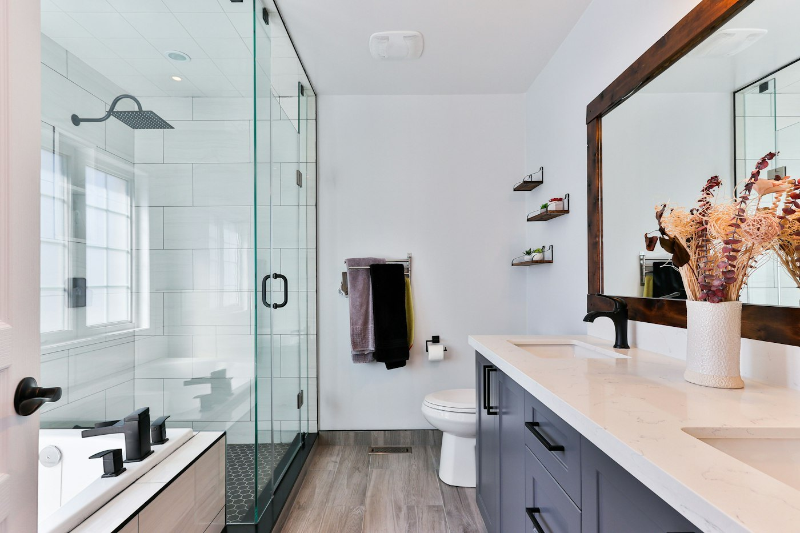

24/7 Emergency Plumbing Services
When pipes rupture, ceilings leak, or gas lines fail, our mobile emergency plumbing units are on call 24 hours a day to prevent catastrophic water damage.
Seconds Count When Water Is Escaping
A single fractured stainless steel braided flexi-hose under a vanity can release up to 1,500 litres of water per hour, saturating carpets, warping timber floorboards, and collapsing plasterboard ceilings below.
Our emergency vehicles are on standby across Brisbane North equipped with high-capacity submersible de-watering pumps, pipe freezing tools, copper crimping gear, and replacement isolation valves to stop disasters in their tracks.
While You Wait for Our Van:
- Locate the main council water meter at your front boundary.
- Turn the brass control stop-cock clockwise until firmly tight.
- Open the lowest garden hose tap to relieve residual line pressure.
- Call our 24/7 hotline directly on 0418 988 181.

Emergency Plumbing Categories
Trained master tradespeople responding rapidly across all northern Brisbane suburbs.
Burst Copper Mains & Walls
Concealed pinhole copper leaks inside wall cavities or concrete slab foundations detected with acoustic listening sticks and rapidly repaired.
Flexi Hose Ruptures
Immediate replacement of corroded under-sink braided hoses with heavy-duty flood-stop safety valves to prevent repeat flood risks.
Gas Smells & Suspected Leaks
Emergency digital manometer pressure decay tests to pinpoint micro gas leaks in cooktops, regulators, or external supply piping.
Sewage Backups & Yard Overflow
Sanitary overflows spilling raw blackwater from boundary inspection shafts cleared urgently with high-pressure hydro-jetters.
Ruptured Hot Water Cylinders
Rusty water pooling around your outdoor cylinder or blown relief valves isolated safely, with temporary supply options until replacement.
Stormwater Overflow & Flooding
Unblocking choked roof downpipes, silted storm pits, and blocked sub-soil drains during sudden Queensland subtropical storm deluges.